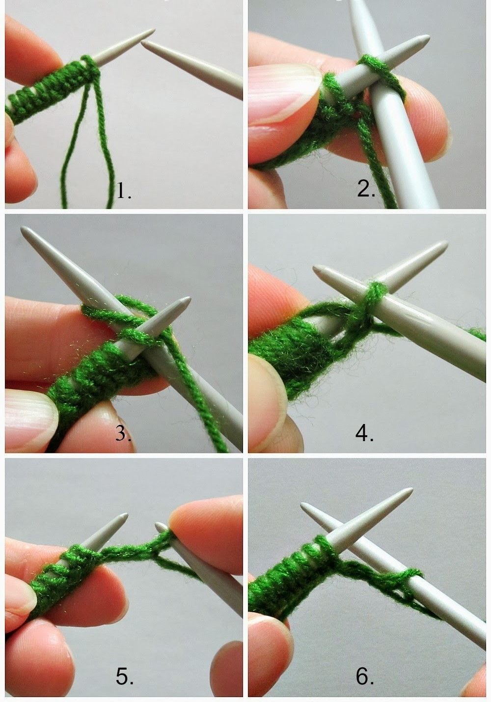

<!DOCTYPE html>
<html>
    <head>
        <link rel="stylesheet" type="text/css" href="./main.css">
        <title>KnitLikeGran - Knit Stitch</title>
    </head>
    <body>
        <link href='https://fonts.googleapis.com/css?family=Poppins' rel='stylesheet'>
        <style>
            body {
                font-family: 'Poppins';font-size: 22px;
                }
                p {color: #D4A373;}
        </style>
    </body>
    <body>

        <header>
            <div class="homepage_navigation">
                
                <a href="index.html"></a>
            
            </div>
            <div class="page_title">
                <h1>The Knit Stitch</h1>
                
            </div>
        </header>
        <content>
            <aside>
                <a href="TutorialKnitStitch.html">Tutorials</a>
                <a href="insert the link here">History of Knitting</a>
                <a href="insert the link here">Patterns</a>

            </aside>
            <div class="content_holder">

                <div class="image_holder">
                    
                    
            </div>
            
        </content>
        <footer>

            <div class="knit_tutorial">
                <p1>The first step is learning the basic knit stitch. Insert your right needle through the bottom of the loop and exiting through the back of the left needle. Wrap the yarn around the needle counter clockwise. (Now this is the tricky part) Take your right needle and go back down the loop on your left needle that you originally went though and take that newly wrapped loop along with you. Then slip the old loop off the needle. You have now made your first knit stitch!</p1>

            </div>
            
        </footer>
        
    </body> 
</html>